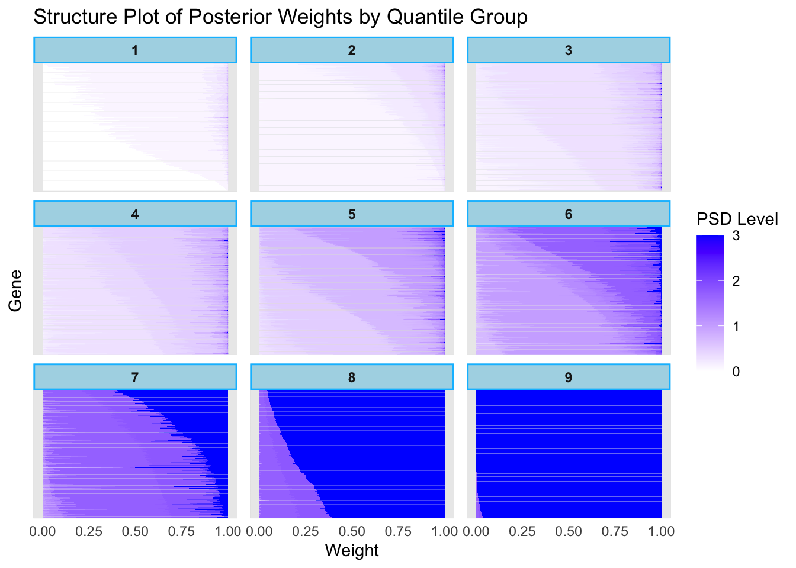

Example: Expression Analysis
Last updated: 2024-10-08
Checks: 7 0
Knit directory: FASHresultsummary/
This reproducible R Markdown analysis was created with workflowr (version 1.7.1). The Checks tab describes the reproducibility checks that were applied when the results were created. The Past versions tab lists the development history.
Great! Since the R Markdown file has been committed to the Git repository, you know the exact version of the code that produced these results.
Great job! The global environment was empty. Objects defined in the global environment can affect the analysis in your R Markdown file in unknown ways. For reproduciblity it’s best to always run the code in an empty environment.
The command set.seed(20240507) was run prior to running
the code in the R Markdown file. Setting a seed ensures that any results
that rely on randomness, e.g. subsampling or permutations, are
reproducible.
Great job! Recording the operating system, R version, and package versions is critical for reproducibility.
Nice! There were no cached chunks for this analysis, so you can be confident that you successfully produced the results during this run.
Great job! Using relative paths to the files within your workflowr project makes it easier to run your code on other machines.
Great! You are using Git for version control. Tracking code development and connecting the code version to the results is critical for reproducibility.
The results in this page were generated with repository version 2946863. See the Past versions tab to see a history of the changes made to the R Markdown and HTML files.
Note that you need to be careful to ensure that all relevant files for
the analysis have been committed to Git prior to generating the results
(you can use wflow_publish or
wflow_git_commit). workflowr only checks the R Markdown
file, but you know if there are other scripts or data files that it
depends on. Below is the status of the Git repository when the results
were generated:
Ignored files:
Ignored: .DS_Store
Ignored: .Rhistory
Ignored: .Rproj.user/
Ignored: analysis/.DS_Store
Ignored: analysis/.Rhistory
Ignored: code/.DS_Store
Ignored: code/cpp/.DS_Store
Ignored: data/.DS_Store
Ignored: data/expression_data/.DS_Store
Ignored: output/.DS_Store
Ignored: output/example/.DS_Store
Ignored: output/example/figure/
Ignored: output/simulation_pollution/.DS_Store
Ignored: output/simulation_pollution/figure/
Untracked files:
Untracked: analysis/circadian_expression (experimment).Rmd
Untracked: output/expression/gene_set_table_strober
Unstaged changes:
Modified: analysis/circadian_expression.Rmd
Modified: code/function/functions_fitting_Poisson_circadian_expression.R
Modified: output/circadian_expression/L_matrix.rda
Modified: output/circadian_sim_easy/L_matrix.rda
Modified: output/expression/L_matrix.rda
Modified: thought_process
Note that any generated files, e.g. HTML, png, CSS, etc., are not included in this status report because it is ok for generated content to have uncommitted changes.
These are the previous versions of the repository in which changes were
made to the R Markdown (analysis/expression.Rmd) and HTML
(docs/expression.html) files. If you’ve configured a remote
Git repository (see ?wflow_git_remote), click on the
hyperlinks in the table below to view the files as they were in that
past version.
| File | Version | Author | Date | Message |
|---|---|---|---|---|
| Rmd | 2946863 | Ziang Zhang | 2024-10-08 | wflow_publish("analysis/expression.Rmd") |
| html | 6fc89df | Ziang Zhang | 2024-10-07 | Build site. |
| Rmd | f8d32d7 | Ziang Zhang | 2024-10-07 | wflow_publish("analysis/expression.Rmd") |
| html | 719af82 | Ziang Zhang | 2024-10-02 | Build site. |
| Rmd | d78bfa8 | Ziang Zhang | 2024-10-02 | wflow_publish("analysis/expression.Rmd") |
| html | ec579c2 | Ziang Zhang | 2024-10-01 | Build site. |
| Rmd | 0414ce6 | Ziang Zhang | 2024-10-01 | workflowr::wflow_publish("analysis/expression.Rmd") |
| html | ad988fc | Ziang Zhang | 2024-09-13 | Build site. |
| Rmd | e57fc38 | Ziang Zhang | 2024-09-13 | wflow_publish("analysis/expression.Rmd") |
| Rmd | a22557d | Ziang Zhang | 2024-09-13 | update the website |
| html | a22557d | Ziang Zhang | 2024-09-13 | update the website |
| html | b729c3f | Ziang Zhang | 2024-06-10 | Build site. |
| Rmd | 62566ff | Ziang Zhang | 2024-06-10 | wflow_git_commit(c("analysis/expression.Rmd")) |
| html | fb94e2d | Ziang Zhang | 2024-05-31 | Build site. |
| Rmd | d6a5a69 | Ziang Zhang | 2024-05-31 | wflow_publish("analysis/expression.Rmd") |
| html | bf7911a | Ziang Zhang | 2024-05-31 | Build site. |
| Rmd | d7ad1da | Ziang Zhang | 2024-05-31 | wflow_publish("analysis/expression.Rmd") |
| html | 6d68a5d | Ziang Zhang | 2024-05-28 | Build site. |
| Rmd | da46108 | Ziang Zhang | 2024-05-28 | wflow_publish(files = "analysis/expression.Rmd") |
| html | 00d489f | Ziang Zhang | 2024-05-27 | Build site. |
| Rmd | ade2216 | Ziang Zhang | 2024-05-27 | wflow_publish(files = "analysis/expression.Rmd") |
| html | cfe24a9 | Ziang Zhang | 2024-05-27 | Build site. |
| Rmd | 16264cf | Ziang Zhang | 2024-05-27 | wflow_publish(files = "analysis/expression.Rmd") |
| html | 425cb9d | Ziang Zhang | 2024-05-27 | Build site. |
| Rmd | ab342cb | Ziang Zhang | 2024-05-27 | wflow_git_commit(c("analysis/simulation_eQTL_identification.Rmd", |
| html | 3b37c54 | Ziang Zhang | 2024-05-15 | update html |
| Rmd | 08cc7a7 | Ziang Zhang | 2024-05-15 | wflow_git_commit(c("analysis/expression.Rmd", "analysis/covid_example.Rmd")) |
| html | 5f486a4 | Ziang Zhang | 2024-05-15 | update the expression example |
| Rmd | f571ee0 | Ziang Zhang | 2024-05-15 | wflow_git_commit(c("analysis/covid_example.Rmd", "code/function/functions_fitting_Poisson_covid.R", |
Setup
We consider the (raw) gene expression data measured over 16 days as studied in Strober et al, 2019. For simplicity of the presentation, we consider only one cell-line in this example. The dataset contains the raw expression counts of 16319 genes.
To model the true (log) expression level \(f_i(t_j)\) of the \(i\)th gene at day \(t_j\), we assume that the expression count \(y_{i}(t_j)\) is Poisson distributed with mean \(o_j\exp \left(f_i\left(t_j\right)\right)\), where \(o_j\) is the library size at day \(t_j\).
Model
Assume most of the gene expression trajectories are expected to be linear, we therefore consider the following finite mixture prior for each gene expression level \(f_i(t_j)\): \[f_i(t) = \sum_{k=0}^K \pi_k \text{GP}_k(t).\] For each \(k\), the mixture component has the prior: \[Lf(t) = \sigma_k W(t), \] with \(W(t)\) being a Gaussian white noise process and \(\sigma_k\) being the smoothness. Choosing \(L = \frac{\partial^2}{\partial t^2}\), the base model that each \(f_i\) being shrunk to is therefore \(\text{Null}\{L\} = \text{span}\{1,t\}\).
Processing the expression data
all_data_names <- list.files(data_dir)
#### let's consider one cell-line for simplicity
load(paste0(data_dir, "/", all_data_names[1]))
str(expression_data_one_cell_line) tibble [261,104 × 5] (S3: tbl_df/tbl/data.frame)
$ Gene_id : chr [1:261104] "ENSG00000000419" "ENSG00000000419" "ENSG00000000419" "ENSG00000000419" ...
$ Cell_line : chr [1:261104] "18489" "18489" "18489" "18489" ...
$ Day : int [1:261104] 0 1 2 3 4 5 6 7 8 9 ...
$ value : int [1:261104] 825 2432 1044 874 766 632 839 685 640 636 ...
$ external_gene_name: chr [1:261104] "DPM1" "DPM1" "DPM1" "DPM1" ...Let’s create one dataset for each gene:
num_knots <- 16
p <- 2
datasets <- list()
all_gene <- unique(expression_data_one_cell_line$Gene_id)
for (gene in all_gene) {
datasets[[gene]] <- expression_data_one_cell_line %>% filter(Gene_id == gene)
datasets[[gene]]$x <- as.numeric(datasets[[gene]]$Day)
datasets[[gene]]$y <- datasets[[gene]]$value
}
save(datasets, file = paste0(result_dir, "/datasets.rda"))Compute the library sizes:
size_vec <- numeric(length = nrow(datasets[[1]]))
for (i in 1:length(size_vec)) {
all_counts <- unlist(lapply(datasets, function(x) {x$y[x$Day == (i-1)]}))
size_vec[i] <- sum(all_counts)
}
log_size_vec <- log(size_vec)Applying empirical Bayes
psd_vec <- sort(unique(c(0, seq(0,3, length.out = 31))))
## set up a progress bar
L_vecs <- vector("list", length(datasets))
pb <- txtProgressBar(min = 0, max = length(datasets), style = 3)
for (i in 1:length(datasets)) {
setTxtProgressBar(pb, i)
dataset <- datasets[[i]]
L_vecs[[i]] <- compute_log_likelihood_ospline_seq2(
dataset = dataset,
p = p,
num_knots = num_knots,
psd_iwp_vector = psd_vec,
pred_step = 1,
betaprec = betaprec,
log_lib_size = log_size_vec
)
}
L_matrix <- do.call(rbind, L_vecs)
save(L_matrix, file = paste0(result_dir, "/L_matrix.rda"))fit.sqp <- mixsqp(L = L_matrix, log = TRUE)Running mix-SQP algorithm 0.3-54 on 16319 x 31 matrix
convergence tol. (SQP): 1.0e-08
conv. tol. (active-set): 1.0e-10
zero threshold (solution): 1.0e-08
zero thresh. (search dir.): 1.0e-14
l.s. sufficient decrease: 1.0e-02
step size reduction factor: 7.5e-01
minimum step size: 1.0e-08
max. iter (SQP): 1000
max. iter (active-set): 20
number of EM iterations: 10
Computing SVD of 16319 x 31 matrix.
Matrix is not low-rank; falling back to full matrix.
iter objective max(rdual) nnz stepsize max.diff nqp nls
1 +1.634441920e+00 -- EM -- 31 1.00e+00 1.11e-01 -- --
2 +1.618829189e+00 -- EM -- 31 1.00e+00 2.75e-02 -- --
3 +1.615448617e+00 -- EM -- 31 1.00e+00 9.87e-03 -- --
4 +1.613879324e+00 -- EM -- 31 1.00e+00 5.46e-03 -- --
5 +1.612942812e+00 -- EM -- 31 1.00e+00 3.48e-03 -- --
6 +1.612296643e+00 -- EM -- 31 1.00e+00 2.42e-03 -- --
7 +1.611809877e+00 -- EM -- 31 1.00e+00 2.10e-03 -- --
8 +1.611423134e+00 -- EM -- 31 1.00e+00 1.84e-03 -- --
9 +1.611105393e+00 -- EM -- 31 1.00e+00 1.61e-03 -- --
10 +1.610838410e+00 -- EM -- 31 1.00e+00 1.42e-03 -- --
1 +1.610610420e+00 +3.320e-02 31 ------ ------ -- --
2 +1.608587903e+00 +2.507e-03 13 1.00e+00 6.29e-02 20 1
3 +1.608291005e+00 +5.191e-04 13 1.00e+00 1.04e-01 20 1
4 +1.608290952e+00 +1.919e-07 14 1.00e+00 3.60e-03 12 1
5 +1.608290952e+00 -4.218e-08 14 1.00e+00 2.31e-06 18 1
Optimization took 0.09 seconds.
Convergence criteria met---optimal solution found.numiter <- nrow(fit.sqp$progress)
plot(1:numiter,fit.sqp$progress$objective,type = "b",
pch = 20,lwd = 2,xlab = "SQP iteration",
ylab = "objective",xaxp = c(1,numiter,numiter - 1))
prior_weight <- data.frame(p = rep(p, each = length(psd_vec)), psd_iwp = psd_vec, prior_weight = fit.sqp$x)
posterior_matrix <- matrix(0, nrow = nrow(L_matrix), ncol = ncol(L_matrix))
for(i in 1:nrow(L_matrix)){
posterior_matrix[i,] <- exp(L_matrix[i,] - max(L_matrix[i,]) + log(fit.sqp$x))
posterior_matrix[i,] <- posterior_matrix[i,]/sum(posterior_matrix[i,])
}
colnames(posterior_matrix) <- paste0(p,"_",psd_vec)
posterior_weights_matrix <- posterior_matrixObtaining posteriors
num_datasets <- length(datasets)
num_weights <- sum(prior_weight$prior_weight != 0)
posterior_weights_matrix <- matrix(nrow = num_datasets, ncol = num_weights)
# Loop through each dataset and perform fitting
fitted_datasets <- list()
# create a progress bar
pb <- txtProgressBar(min = 0, max = num_datasets, style = 3)
for (i in seq_along(datasets)) {
setTxtProgressBar(pb, i)
dataset <- datasets[[i]]
fit_result_final <- fit_ospline_with_prior2(
num_cores = 1,
dataset = dataset,
num_knots = num_knots,
prior_weight = prior_weight,
betaprec = betaprec,
pred_step = 1,
log_lib_size = log_size_vec
)
posterior_weights_matrix[i, ] <- fit_result_final$posterior_weights[, "posterior_weight"]
fitted_datasets[[i]] <- aggregate_fit_with_prior(x = dataset$x, fit_results_with_prior = fit_result_final, original = TRUE)$summary_df
}
names(fitted_datasets) <- all_gene
colnames(posterior_weights_matrix) <- paste(as.character(fit_result_final$posterior_weights[, "p"]),
as.character(fit_result_final$posterior_weights[, "psd_iwp"]), sep = "_")
save(fitted_datasets, posterior_weights_matrix, file = paste0(result_dir, "/fitted_pos_results.rda"))posterior_weights_df <- as.data.frame(posterior_weights_matrix)
posterior_weights_df$id <- all_gene
melted_data <- melt(posterior_weights_df, id.vars = "id")
melted_data$variable2 <- sub("_.*", "", melted_data$variable)
melted_data$variable3 <- (round(as.numeric(sub("*._", "", melted_data$variable)), 3))Plot a sorted version of this, based on the mean PSD in each gene:
mean_psd <- apply(posterior_weights_matrix, 1, function(x) {
weighted_psd <- as.numeric(sub("*._", "", colnames(posterior_weights_matrix)))
sum(x * weighted_psd)
})
sorted_index <- order(mean_psd)
sorted_posterior_weights_matrix <- posterior_weights_matrix[sorted_index, ]
sorted_posterior_weights_df <- as.data.frame(sorted_posterior_weights_matrix)
sorted_posterior_weights_df$id <- all_gene[sorted_index]
melted_data_sorted <- melt(sorted_posterior_weights_df, id.vars = "id")
melted_data_sorted$variable2 <- sub("_.*", "", melted_data_sorted$variable)
melted_data_sorted$variable3 <- (round(as.numeric(sub("*._", "", melted_data_sorted$variable)), 3))
ggplot(melted_data_sorted, aes(x = factor(id, levels = sorted_posterior_weights_df$id), y = value, fill = variable3)) +
geom_bar(stat = "identity") +
labs(x = "Gene", y = "Weight", fill = "PSD") +
ggtitle("Structure Plot of Posterior Weights") +
coord_flip() +
scale_fill_gradient(low = "white", high = "blue") +
theme(
axis.text.y = element_blank(),
axis.ticks.y = element_blank(),
panel.background = element_rect(fill = "white", colour = "grey"),
plot.background = element_rect(fill = "white", colour = NA)
)
Clustering based on posterior weights
Let’s group them into num_clusters groups, based on the
quantiles of the mean PSD:
mean_psd_ordered <- mean_psd[sorted_index]
# num_clusters <- 22
# quantiles <- quantile(mean_psd_ordered, probs = seq(0, 1, 1/num_clusters))
quantiles <- c(0, 0.1, 0.2, 0.35, 0.5, 1, 1.7, 2.5, 2.95, 3)
quantile_groups <- cut(mean_psd_ordered, breaks = quantiles,
include.lowest = TRUE, labels = FALSE)
table(quantile_groups)quantile_groups
1 2 3 4 5 6 7 8 9
446 3429 3168 2203 3879 1826 741 277 350 num_clusters <- length(unique(quantile_groups))
sorted_posterior_weights_df$cluster <- quantile_groups
melted_data_quantiles <- melt(sorted_posterior_weights_df, id.vars = c("id", "cluster"))
melted_data_quantiles$variable2 <- sub("_.*", "", melted_data_quantiles$variable)
melted_data_quantiles$variable3 <- round(as.numeric(sub(".*_", "", melted_data_quantiles$variable)), 3)
melted_data_quantiles <- melted_data_quantiles %>% arrange(cluster)
# Ensure the 'id' factor is ordered according to the sorted mean_psd
melted_data_quantiles$id <- factor(melted_data_quantiles$id, levels = sorted_posterior_weights_df$id)
# Plotting with facets by cluster and proper sorting of 'id'
ggplot(melted_data_quantiles, aes(x = factor(id, levels = sorted_posterior_weights_df$id), y = value, fill = variable3)) +
geom_bar(stat = "identity") +
labs(x = "Gene", y = "Weight", fill = "PSD Level") +
ggtitle("Structure Plot of Posterior Weights by Quantile Group") +
coord_flip() +
scale_fill_gradient(low = "white", high = "blue") +
facet_wrap(~cluster, scales = "free_y") + # Faceting by cluster while keeping order
theme_minimal() +
theme(
axis.text.y = element_blank(),
axis.ticks.y = element_blank(),
panel.background = element_rect(fill = "white", colour = "grey"),
plot.background = element_rect(fill = "white", colour = NA),
strip.background = element_rect(fill = "lightblue", colour = "deepskyblue", size = 1),
strip.text = element_text(face = "bold")
)Warning: The `size` argument of `element_rect()` is deprecated as of ggplot2 3.4.0.
ℹ Please use the `linewidth` argument instead.
This warning is displayed once every 8 hours.
Call `lifecycle::last_lifecycle_warnings()` to see where this warning was
generated.
Question: what genes are enriched in each of the cluster?
library(clusterProfiler)
library(msigdbr)
library(org.Hs.eg.db) # Assuming human genes
library(biomaRt)
library(clusterProfiler)
library(cowplot)
# Retrieve Hallmark gene sets for Homo sapiens
m_t2g <- msigdbr(species = "Homo sapiens", category = "H") %>%
dplyr::select(gs_name, entrez_gene)
mart <- useMart("ensembl", dataset = "hsapiens_gene_ensembl")
enrich_cluster <- function(cluster_id, q_val_cutoff = 0.05, pvalueCutoff = 0.05, melted_data_input) {
genes_selected <- melted_data_input %>% filter(cluster == cluster_id) %>% pull(id) %>% as.character() %>% unique()
genes_converted <- getBM(
filters = "ensembl_gene_id",
attributes = c("ensembl_gene_id", "entrezgene_id"),
values = genes_selected,
mart = mart
)
# Extract Entrez IDs from the converted data
entrez_gene_list <- genes_converted$entrezgene_id
genes_converted_all <- getBM(
filters = "ensembl_gene_id",
attributes = c("ensembl_gene_id", "entrezgene_id"),
values = melted_data_input$id %>% as.character() %>% unique(),
mart = mart
)
entrez_universe <- as.character(genes_converted_all$entrezgene_id)
entrez_universe <- entrez_universe[!is.na(entrez_universe)]
# Perform enrichment analysis using Hallmark gene sets
enrich_res <- enricher(pAdjustMethod = "BH",
entrez_gene_list,
TERM2GENE = m_t2g,
qvalueCutoff = q_val_cutoff,
pvalueCutoff = pvalueCutoff,
universe = entrez_universe)
enrich_res
}enriched_list <- list()
for (i in 1:num_clusters) {
# for each cluster, record the list of its enriched gene sets
enrich_res <- enrich_cluster(cluster_id = i, q_val_cutoff = 0.05, melted_data_input = melted_data_quantiles) # Adjust parameters as needed
enriched_list[[i]] <- enrich_res$Description
names(enriched_list)[i] <- paste0(i)
}
# Automatically create a list of all unique enriched terms
all_enriched_terms <- unique(unlist(enriched_list))
# Remove the "HALLMARK_" prefix from each term
all_enriched_terms_clean <- gsub("HALLMARK_", "", all_enriched_terms)
# Initialize a data frame with clusters as columns and terms as rows
enrichment_table <- data.frame(matrix(nrow = length(all_enriched_terms_clean), ncol = length(enriched_list)))
rownames(enrichment_table) <- all_enriched_terms_clean
colnames(enrichment_table) <- names(enriched_list)
# Fill the table with "yes" or "no"
for (cluster in names(enriched_list)) {
for (term in all_enriched_terms_clean) {
# Check if the term is present in the enriched list of the cluster (after removing "HALLMARK_")
original_term <- paste0("HALLMARK_", term) # Add back the prefix for comparison
enrichment_table[term, cluster] <- ifelse(original_term %in% enriched_list[[cluster]], "yes", "no")
}
}
# Display the resulting table
print(enrichment_table[,-2]) 1 3 4 5 6 7 8 9
BILE_ACID_METABOLISM yes no no no no no no no
MYC_TARGETS_V2 no yes no no no no no no
E2F_TARGETS no no yes no no no no no
MYC_TARGETS_V1 no no no yes no no no no
OXIDATIVE_PHOSPHORYLATION no no no yes no no no no
MYOGENESIS no no no no yes yes no no
MTORC1_SIGNALING no no no no yes no no no
HYPOXIA no no no no yes no no yes
EPITHELIAL_MESENCHYMAL_TRANSITION no no no no yes yes yes yes
IL2_STAT5_SIGNALING no no no no yes no no no
UV_RESPONSE_DN no no no no yes no no yes
INFLAMMATORY_RESPONSE no no no no no yes no no
TNFA_SIGNALING_VIA_NFKB no no no no no yes no yes
COAGULATION no no no no no no no yes
ANGIOGENESIS no no no no no no no yesenriched_list <- list() # To store enrichment results
for (i in 1:num_clusters) {
# For each cluster, perform enrichment and store the results
enrich_res <- enrich_cluster(cluster_id = i, q_val_cutoff = 1, melted_data = melted_data_quantiles) # Set q_val_cutoff to 1 to ensure all p-values are returned
# Store both the descriptions and p-values (not filtered by significance)
enriched_list[[i]] <- data.frame(
Description = enrich_res$Description,
PValue = enrich_res$pvalue # Use the raw p-value
)
names(enriched_list)[i] <- paste0(i)
}
# Automatically create a list of all unique enriched terms
all_enriched_terms <- unique(unlist(lapply(enriched_list, function(x) x$Description)))
# Remove the "HALLMARK_" prefix from each term
all_enriched_terms_clean <- gsub("HALLMARK_", "", all_enriched_terms)
# Initialize a data frame with clusters as columns and terms as rows
enrichment_table <-
data.frame(matrix(
nrow = length(all_enriched_terms_clean),
ncol = length(enriched_list)
))
rownames(enrichment_table) <- all_enriched_terms_clean
colnames(enrichment_table) <- names(enriched_list)
# Fill the table with p-values
for (cluster in names(enriched_list)) {
for (term in all_enriched_terms_clean) {
# Check if the term is present in the enriched list of the cluster
original_term <- paste0("HALLMARK_", term) # Add back the prefix for comparison
term_in_cluster <- if (nrow(enriched_list[[cluster]]) > 0) {
enriched_list[[cluster]]$Description == original_term
} else {
FALSE
}
# If the term is enriched, fill in the p-value; otherwise, compute the enrichment and add its p-value
if (any(term_in_cluster)) {
enrichment_table[term, cluster] <- round(enriched_list[[cluster]]$PValue[term_in_cluster], 3)
}
else {
# If not found in the original result, perform enrichment for the gene set specifically
cluster_id <- as.numeric(cluster)
genes_selected <- melted_data_quantiles %>% filter(cluster == cluster_id) %>% pull(id) %>% as.character() %>% unique()
genes_converted <- getBM(
filters = "ensembl_gene_id",
attributes = c("ensembl_gene_id", "entrezgene_id"),
values = genes_selected,
mart = mart
)
# Extract Entrez IDs from the converted data
entrez_gene_list <- genes_converted$entrezgene_id
genes_converted_all <- getBM(
filters = "ensembl_gene_id",
attributes = c("ensembl_gene_id", "entrezgene_id"),
values = melted_data_quantiles$id %>% as.character() %>% unique(),
mart = mart
)
entrez_universe <- as.character(genes_converted_all$entrezgene_id)
entrez_universe <- entrez_universe[!is.na(entrez_universe)]
enrich_res_full <- enricher(entrez_gene_list,
TERM2GENE = m_t2g,
pvalueCutoff = 2, qvalueCutoff = 2,
universe = entrez_universe)
specific_term <- enrich_res_full %>% filter(Description == original_term)
# Add p-value if it exists
if (nrow(specific_term) > 0) {
enrichment_table[term, cluster] <- round(specific_term$p.adjust, 3)
} else {
enrichment_table[term, cluster] <- 1 # No p-value found
}
}
}
}
# Display the resulting table with p-values
print(enrichment_table)Question: what enriched gene sets were not enriched in Strober’s analysis?
Here are the enrichment result from Strober’s analysis for comparison:
4 5 13 16 11 2 6 9
BILE_ACID_METABOLISM yes no no no no no no no
MYC_TARGETS_V2 no yes no no no no no no
E2F_TARGETS no yes yes yes no no no no
MYC_TARGETS_V1 no yes yes yes no no no no
OXIDATIVE_PHOSPHORYLATION no no no no yes no no no
MYOGENESIS no no no no no yes yes no
MTORC1_SIGNALING no yes no no no no no no
HYPOXIA no no no no no no no no
EPITHELIAL_MESENCHYMAL_TRANSITION yes no no no no no yes no
IL2_STAT5_SIGNALING no no no no no no no no
UV_RESPONSE_DN no no no no no no no no
INFLAMMATORY_RESPONSE no no no no no no no no
TNFA_SIGNALING_VIA_NFKB no no no no no no yes no
COAGULATION yes no no no no no no no
ANGIOGENESIS no no no no no no no noA few interesting observations:
Many gene-sets are enriched in clusters identified from both approaches. In particular, cluster 7 from FASH identified MYOGENESIS, EPITHELIAL_MESENCHYMAL_TRANSITION, INFLAMMATORY_RESPONSE and TNFA_SIGNALING_VIA_NFKB as enriched gene sets, whereas the cluster 6 from Strober identified MYOGENESIS, EPITHELIAL_MESENCHYMAL_TRANSITION and TNFA_SIGNALING_VIA_NFKB.
Clusters (especially cluster 9) from FASH identifies some interesting gene-sets that were missed by Strober’s analysis, such as UV_RESPONSE_DN, INFLAMMATORY_RESPONSE, IL2_STAT5_SIGNALING, ANGIOGENESIS and HYPOXIA. Note that UV_RESPONSE_DN INFLAMMATORY_RESPONSE and IL2_STAT5_SIGNALING are all related to protective features to prevent external damage due to environment or pathogens. ANGIOGENESIS and HYPOXIA are related to the formation of new blood vessels and the response to low oxygen levels, respectively.
sessionInfo()R version 4.3.1 (2023-06-16)
Platform: aarch64-apple-darwin20 (64-bit)
Running under: macOS Monterey 12.7.4
Matrix products: default
BLAS: /Library/Frameworks/R.framework/Versions/4.3-arm64/Resources/lib/libRblas.0.dylib
LAPACK: /Library/Frameworks/R.framework/Versions/4.3-arm64/Resources/lib/libRlapack.dylib; LAPACK version 3.11.0
locale:
[1] en_US.UTF-8/en_US.UTF-8/en_US.UTF-8/C/en_US.UTF-8/en_US.UTF-8
time zone: America/Chicago
tzcode source: internal
attached base packages:
[1] stats4 parallel splines stats graphics grDevices utils
[8] datasets methods base
other attached packages:
[1] cowplot_1.1.3 biomaRt_2.58.2 org.Hs.eg.db_3.18.0
[4] AnnotationDbi_1.64.1 IRanges_2.36.0 S4Vectors_0.40.2
[7] Biobase_2.62.0 BiocGenerics_0.48.1 msigdbr_7.5.1
[10] clusterProfiler_4.10.1 lubridate_1.9.3 forcats_1.0.0
[13] stringr_1.5.1 dplyr_1.1.4 purrr_1.0.2
[16] readr_2.1.5 tidyr_1.3.1 tibble_3.2.1
[19] tidyverse_2.0.0 mixsqp_0.3-54 reshape2_1.4.4
[22] ggplot2_3.5.1 Matrix_1.6-3 TMB_1.9.15
[25] BayesGP_0.1.2 workflowr_1.7.1
loaded via a namespace (and not attached):
[1] RColorBrewer_1.1-3 rstudioapi_0.16.0 jsonlite_1.8.9
[4] magrittr_2.0.3 farver_2.1.2 rmarkdown_2.28
[7] fs_1.6.4 zlibbioc_1.48.2 vctrs_0.6.5
[10] memoise_2.0.1 RCurl_1.98-1.16 ggtree_3.10.1
[13] progress_1.2.3 htmltools_0.5.8.1 curl_5.2.3
[16] gridGraphics_0.5-1 sass_0.4.9 bslib_0.8.0
[19] plyr_1.8.9 cachem_1.1.0 whisker_0.4.1
[22] igraph_2.0.3 lifecycle_1.0.4 pkgconfig_2.0.3
[25] gson_0.1.0 R6_2.5.1 fastmap_1.2.0
[28] GenomeInfoDbData_1.2.11 digest_0.6.37 aplot_0.2.3
[31] enrichplot_1.22.0 colorspace_2.1-1 patchwork_1.3.0
[34] ps_1.8.0 rprojroot_2.0.4 irlba_2.3.5.1
[37] RSQLite_2.3.7 filelock_1.0.3 labeling_0.4.3
[40] fansi_1.0.6 timechange_0.3.0 httr_1.4.7
[43] polyclip_1.10-7 compiler_4.3.1 bit64_4.5.2
[46] withr_3.0.1 BiocParallel_1.36.0 viridis_0.6.5
[49] DBI_1.2.3 highr_0.11 ggforce_0.4.2
[52] MASS_7.3-60 rappdirs_0.3.3 HDO.db_0.99.1
[55] tools_4.3.1 scatterpie_0.2.4 ape_5.8
[58] httpuv_1.6.15 glue_1.7.0 callr_3.7.6
[61] nlme_3.1-166 GOSemSim_2.28.1 promises_1.3.0
[64] shadowtext_0.1.4 grid_4.3.1 getPass_0.2-4
[67] fgsea_1.28.0 generics_0.1.3 gtable_0.3.5
[70] tzdb_0.4.0 data.table_1.16.0 hms_1.1.3
[73] xml2_1.3.6 tidygraph_1.3.1 utf8_1.2.4
[76] XVector_0.42.0 ggrepel_0.9.6 pillar_1.9.0
[79] babelgene_22.9 yulab.utils_0.1.7 later_1.3.2
[82] tweenr_2.0.3 BiocFileCache_2.10.2 treeio_1.26.0
[85] lattice_0.22-6 bit_4.5.0 tidyselect_1.2.1
[88] GO.db_3.18.0 Biostrings_2.70.3 knitr_1.48
[91] git2r_0.33.0 gridExtra_2.3 xfun_0.47
[94] graphlayouts_1.2.0 stringi_1.8.4 lazyeval_0.2.2
[97] ggfun_0.1.6 yaml_2.3.10 evaluate_1.0.0
[100] codetools_0.2-20 ggraph_2.2.1 qvalue_2.34.0
[103] ggplotify_0.1.2 cli_3.6.3 munsell_0.5.1
[106] processx_3.8.4 jquerylib_0.1.4 Rcpp_1.0.13
[109] GenomeInfoDb_1.38.8 dbplyr_2.5.0 png_0.1-8
[112] XML_3.99-0.17 blob_1.2.4 prettyunits_1.2.0
[115] DOSE_3.28.2 bitops_1.0-8 tidytree_0.4.6
[118] viridisLite_0.4.2 scales_1.3.0 crayon_1.5.3
[121] rlang_1.1.4 fastmatch_1.1-4 KEGGREST_1.42.0